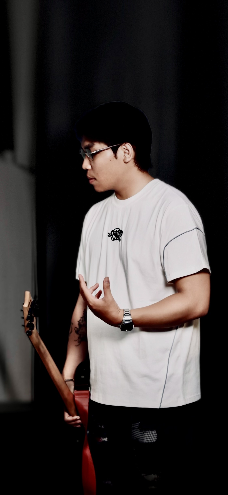

江春華 Cheng Chhuonhor - 個人介紹

大家好，我是江春華，來自柬埔寨，今年25歲。我熱愛音樂創作，特別是電子音樂。 音樂對我來說不只是興趣，更是表達自我的方式。我來到台灣，希望能體驗在地文化， 認識當地朋友，並學習台語。希望能用音樂連結不同文化，創造出屬於我們共同的聲音。
📸 個人照片集



大家好，我是江春華，來自柬埔寨，今年25歲。我熱愛音樂創作，特別是電子音樂。 音樂對我來說不只是興趣，更是表達自我的方式。我來到台灣，希望能體驗在地文化， 認識當地朋友，並學習台語。希望能用音樂連結不同文化，創造出屬於我們共同的聲音。